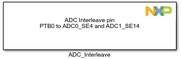
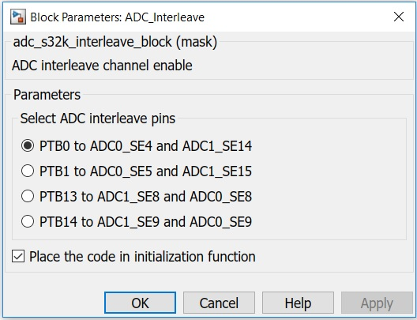

ADC Interleave Block
This block enables the interleaved mode for S32K14x.
Block Image
Inputs:
- None
Outputs:
- None
Parameters and Dialog Box
The block dialog consists of the following tabs:
ADC interleave pins
Selects the ADC interleave pins.
There are several special ADC channels which support hardware interleave between multiple ADCs:
- PTB0 to ADC0_SE4 and ADC1_SE14
- PTB1 to ADC0_SE5 and ADC1_SE15
- PTB13 to ADC1_SE8 and ADC0_SE8
- PTB14 to ADC1_SE9 and ADC0_SE9
Place the code in intialization function
Allows the user to decide where the code will be placed: If checked, the code will be written in initialization function; otherwise, the code will go where the block is placed.
Block Dependency
Please do the following:
- Configure two ADC Config blocks.
Block Miscellaneous Details
- ADC interleaving is not supported in S32K11x devices.
* To get more information refer to Hardware Manual documentation.